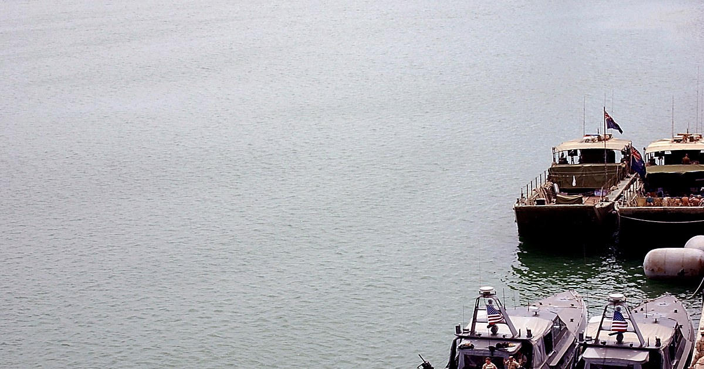

A practical guide for international freight, port, rail, road, warehousing and transport-technology companies entering Iraq — from Al Faw Grand Port and the Development Road to customs digitisation, dry ports and inland distribution.

Iraq's logistics market is shaped by a simple reality: most imported goods enter through southern ports or land borders and must then move long distances to Baghdad, the northern governorates and the Kurdistan Region. That creates persistent demand for port capacity, inland transport, warehousing, customs brokerage and reliable freight coordination.
The longer-term opportunity is larger. Al Faw Grand Port is being developed as the southern anchor of the Development Road, a multimodal corridor of more than 1,200 kilometres connecting the Gulf to Turkey. At the same time, a World Bank-backed railway programme is modernising 1,047 kilometres of the existing north–south route between Umm Qasr and Mosul through Baghdad.
Sources: Al Faw Grand Port, World Bank and UNCTAD. Figures are indicative; verify current status before reliance.
New port capacity, marine infrastructure and terminal systems create demand across construction, equipment, operations and digital port management.
A planned north–south rail and road corridor designed to connect the Gulf to Turkey and European markets.
Rehabilitation of the Umm Qasr–Baghdad–Mosul railway, rolling stock and maintenance capacity.
ASYCUDA deployment is changing declaration, revenue and clearance processes at major entry points.
Large urban markets in Baghdad, Basra, Mosul and the Kurdistan Region require dependable inland distribution.
Energy, construction, water and manufacturing projects need heavy lift, abnormal loads, secure storage and coordinated customs clearance.
| Programme | Location | Commercial relevance |
|---|---|---|
| Al Faw Grand Port | Basra | Marine works, terminals, cranes, handling systems, security, utilities, operations and port digitalisation. |
| Development Road | Basra to Turkish border | Rail, motorway, bridges, tunnels, logistics hubs, intermodal systems and corridor operations. |
| IREM railway project | Umm Qasr–Baghdad–Mosul | Track renewal, signalling, telecoms, rolling-stock maintenance, workshops and private dry-port participation. |
| Dry ports & logistics hubs | National | Warehousing, bonded zones, container depots, customs services and intermodal transfer. |
| ASYCUDA customs rollout | Major customs offices | Digital declarations, risk management, system integration, scanners, training and compliance. |
| Road corridor upgrades | National | Road rehabilitation, intelligent transport systems, weigh stations, safety and maintenance. |
| Governorate | Logistics focus |
|---|---|
| Basra → | Al Faw, Umm Qasr, maritime terminals, oil and project cargo, warehousing and Kuwait-border routes. |
| Baghdad → | The country's largest consumption and distribution centre, air cargo gateway and national rail-road interchange. |
| Nineveh → | Northern rail terminus, reconstruction freight and routes toward Turkey and Syria. |
| Anbar → | Jordan and Syria corridors, long-haul road freight, border logistics and industrial-zone potential. |
| Dhi Qar → | North–south transit, industrial and energy cargo, rail and road services. |
| Kirkuk → | Energy logistics, northern distribution and links between Federal Iraq and the Kurdistan Region. |
Public works, supply and service contracts issued by ministries, ports, railways and state companies.
Infrastructure packages covering terminals, rail, roads, depots, utilities and systems.
Long-term structures for terminals, logistics parks, dry ports, warehousing and transport services.
Port, terminal, warehouse and fleet operations with public or private Iraqi counterparts.
A practical route for equipment, software, vehicles, scanners and logistics technology.
Specialist freight, customs, heavy haulage, security, lifting and project-cargo packages.
| Technology or service | Demand |
|---|---|
| Port cranes & handling equipment | High — new and expanding terminals |
| Rail signalling & telecoms | High — north–south railway modernisation |
| Rolling stock & maintenance | High — ageing fleet and workshop requirements |
| Customs & cargo-scanning systems | High — digitalisation and border control |
| Warehouse and cold-chain systems | High — food, pharmaceuticals and retail distribution |
| Fleet telematics & GPS tracking | High — route control, security and fuel efficiency |
| Dry-port and intermodal systems | Growing — corridor development and inland clearance |
| Heavy-haul and project cargo | High — energy, construction and industrial projects |
Identifying the right port, border, corridor, warehouse and delivery route for your cargo or service.
Vetting freight forwarders, transporters, customs brokers, agents and warehouse operators.
Coordinating manifests, permits, declarations and clearance with the right local specialists.
Route surveys, lifting, heavy haulage, escorts, site delivery and sequencing.
Mapping public bodies, private buyers, live projects and realistic routes into the market.
Following cargo, resolving bottlenecks and keeping commercial teams informed through delivery.
This guide uses public information from the World Bank, UNCTAD, Al Faw Grand Port and Iraqi transport institutions. Project values, procurement models, timelines and counterparties can change, so companies should verify current tender documents and official notices before committing resources.
The largest opportunities are linked to Al Faw Grand Port, the Development Road, railway rehabilitation, dry ports and logistics hubs, customs digitisation, warehousing, cold chain, fleet services and specialist freight.
Key public bodies include the Ministry of Transport, the General Company for Ports of Iraq, Iraqi Republic Railways, the General Company for Land Transport, the General Commission for Customs, the National Investment Commission and provincial authorities.
Yes. International freight forwarders, shipping lines, terminal operators, EPC contractors, technology suppliers and logistics service companies can operate through local registration, branches, joint ventures, agents or project-specific partnerships.
A local partner is not always a legal requirement, but a vetted Iraqi partner is often valuable for permits, customs, inland transport, tendering, site access and provincial coordination.
The Development Road is Iraq's planned multimodal corridor linking Al Faw Grand Port in the south to Turkey and onward to Europe through rail, road and logistics infrastructure.
The main risks are customs and documentation delays, inconsistent procedures across entry points, infrastructure gaps, cargo security, payment terms, border congestion, climate and heat exposure, and differences between Federal Iraq and the Kurdistan Region.
Whether you are a freight forwarder, port or rail supplier, warehouse operator, technology company or project-cargo specialist, we can help you identify the right corridor, counterpart and route in.
Talk to an Iraq expert →